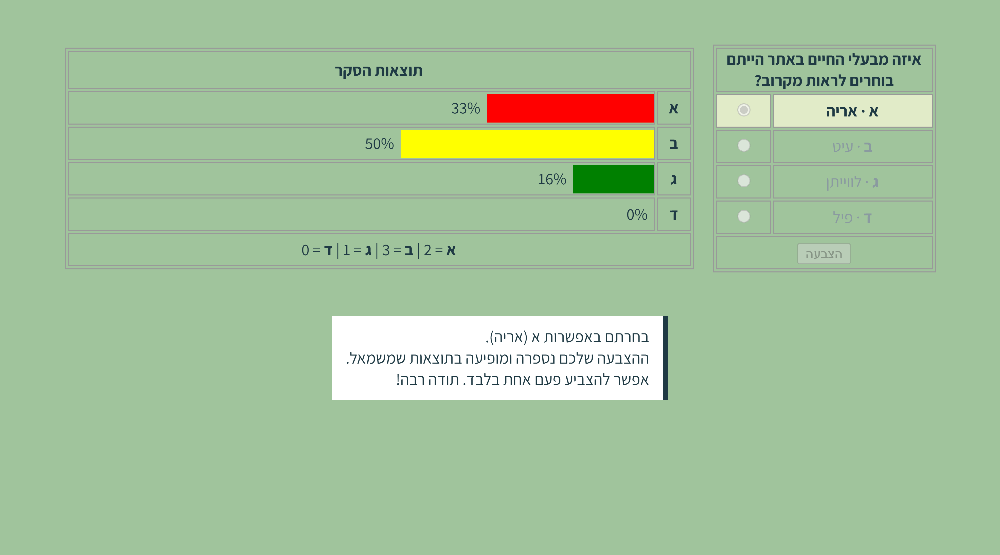

מה בונים?
דף סקר באתר שלכם: שאלה אחת מהנושא שלכם, וארבע תשובות. כל משתמש רשום מצביע פעם אחת, ומיד אחרי ההצבעה רואה את התוצאות של כל הגולשים, כגרף של עמודות צבעוניות. התשובה שבחר מסומנת, ואי אפשר להצביע שוב.
באתר המלווה: "איזה מבעלי החיים באתר הייתם בוחרים לראות מקרוב?", עם ארבע תשובות: אריה, עיט, לווייתן, פיל.

את כל זה כבר למדתם
- דף תוכן חדש, וקישור בתפריט: תחנה 4, שלבים 5 ו-3
- התפריט לפי מי שמחובר (
menuBar): תחנה 15 - כפתורי רדיו (
radio), וקריאה שלהם בשרת עםRequest.Form: פרקים 3.4 ו-3.10 - המגירה
Session, וערכי ההתחלה ב-Session_Start: פרק 4.10 - המגירה
Application,Lockו-UnLock: פרק 4.11 IsPostBack: פרק 4.15, שלב 4- הצגת מחרוזת מהשרת בדף,
<%= … %>: סעיף 3.10.3 switch, מערכים ולולאתfor: "יסודות מדעי המחשב"
ומה חדש כאן: איך מחשבים אחוזים בלי לאבד אותם בחילוק, ואיך הופכים אחוז לעמודה בגרף.
שלב 1 · המונים: ארבע מגירות לכל האתר, ושתיים לכל גולש
כל תשובה צריכה מונה משלה, שכל הגולשים מוסיפים לו. זה בדיוק התפקיד של Application. ובנוסף, כל גולש צריך לזכור אם הוא כבר הצביע, ובמה בחר. זה התפקיד של Session.
בקובץ Global.asax, בתוך Application_Start, אחרי המונים שכבר יש שם:
Application["q1"] = 0; // מונה הצבעות לתשובות א-ד
Application["q2"] = 0;
Application["q3"] = 0;
Application["q4"] = 0;ובתוך Session_Start, אחרי שאר ערכי ההתחלה:
Session["voted"] = false;
Session["myAnswer"] = "";voted אומר אם הגולש הזה כבר הצביע. myAnswer שומר את התשובה שבחר, כדי לסמן אותה גם אם הוא חוזר לדף.
שלב 2 · הדף והתפריט
- דף תוכן חדש, כמו בתחנה 4, שלב 5. באתר המלווה:
Survey.aspx, וב-Title: "סקר". - קישור בתפריט, רק למשתמשים רשומים ולמנהל (בתחנה 15 בנינו את התפריט לפי מי שמחובר). בקובץ
MasterPage.Master.cs, בענף של המנהל ובענף של המשתמש הרגיל, לפני הסגירה:
menuBar += "<a href='Survey.aspx' class='mpMenuBarBtn'>סקר</a>";בניתם את התפריט הנפתח? אז אצלכם כל כפתור בתוך <li>:
menuBar += "<li><a href='Survey.aspx'"
+ " class='mpMenuBarBtn'>סקר</a></li>";התאמה לאתר שלכם: שם הדף והכיתוב בכפתור, לפי הנושא שלכם.
שלב 3 · טבלת הבחירה
בקובץ Survey.aspx, באזור התוכן. טבלה אחת שמחזיקה שני תאים זה ליד זה: מימין טבלת הבחירה, ומשמאל מקום לגרף. מתחת: מקום להודעה.
<form runat="server">
<table class="layoutTable">
<tr>
<td class="rightCell">
<table class="surveyTable <%= lockClass %>">
<tr>
<th colspan="2">איזה מבעלי החיים באתר הייתם בוחרים לראות מקרוב?</th>
</tr>
<tr <%= rowAttr[0] %>>
<td class="optionText"><span class="optLetter">א</span> · אריה</td>
<td class="radioCell">
<input type="radio" name="surveyAnswer" value="1" <%= checkAttr[0] %> <%= lockAttr %> />
</td>
</tr>
<tr <%= rowAttr[1] %>>
<td class="optionText"><span class="optLetter">ב</span> · עיט</td>
<td class="radioCell">
<input type="radio" name="surveyAnswer" value="2" <%= checkAttr[1] %> <%= lockAttr %> />
</td>
</tr>
<tr <%= rowAttr[2] %>>
<td class="optionText"><span class="optLetter">ג</span> · לווייתן</td>
<td class="radioCell">
<input type="radio" name="surveyAnswer" value="3" <%= checkAttr[2] %> <%= lockAttr %> />
</td>
</tr>
<tr <%= rowAttr[3] %>>
<td class="optionText"><span class="optLetter">ד</span> · פיל</td>
<td class="radioCell">
<input type="radio" name="surveyAnswer" value="4" <%= checkAttr[3] %> <%= lockAttr %> />
</td>
</tr>
<tr>
<td colspan="2" class="buttonCell">
<input type="submit" name="submit" value="הצבעה" <%= lockAttr %> />
</td>
</tr>
</table>
</td>
<td class="leftCell">
<%= survey %>
</td>
</tr>
</table>
<%= surveyMsg %>
</form>- ארבעת כפתורי הרדיו באותו
name,surveyAnswer, ולכן אפשר לבחור רק אחד. ה-valueשל כל אחד הוא מספר התשובה, 1 עד 4. זה מה שיגיע לשרת. - החלקים
<%= … %>בתוך התגיות (lockClass,rowAttr,checkAttr,lockAttr) ריקים בהתחלה. אחרי ההצבעה השרת ימלא אותם, וכך ינעל את הטבלה ויסמן את הבחירה (שלב 6).
העיצוב: ב-Survey.aspx, באזור head, בלוק style של הדף. הוא ארוך, ולכן הוא כאן בשלמותו, להעתקה:
<style>
.layoutTable {
width: fit-content;
margin: 40px auto;
}
.leftCell {
text-align: center;
vertical-align: middle;
}
.rightCell {
text-align: center;
vertical-align: middle;
}
.surveyTable {
width: 220px;
margin: 0 auto;
text-align: center;
border: 1px solid #999;
}
.graphTable {
width: 620px;
margin: 0 15px 0 0;
text-align: center;
border: 1px solid #999;
}
.surveyTable th,
.surveyTable td,
.graphTable td {
text-align: center;
vertical-align: middle;
height: 31px;
padding: 0;
border: 1px solid #999;
}
.fixedRow {
height: 30px;
}
.optionText {
width: 150px;
text-align: center;
vertical-align: middle;
}
.optLetter {
font-weight: bold;
}
.surveyLocked td.optionText {
color: #8a9aa0;
}
.surveyLocked tr.rowChosen td {
background-color: #e1ebc8;
}
.surveyLocked tr.rowChosen td.optionText {
color: #1F3A44;
font-weight: bold;
}
.radioCell {
width: 50px;
text-align: center;
vertical-align: middle;
}
.buttonCell {
text-align: center;
vertical-align: middle;
}
.graphTitle {
font-weight: bold;
text-align: center;
vertical-align: middle;
}
.surveyTable th,
.graphTable td.graphTitle {
height: 36px;
}
.graphSummary {
direction: rtl;
text-align: center;
vertical-align: middle;
}
.sumLetter {
font-weight: bold;
}
.letterCell {
width: 30px;
text-align: center;
vertical-align: middle;
font-weight: bold;
}
.graphTable td.barCell {
width: 570px;
text-align: right;
vertical-align: middle;
}
.barBox {
width: 100%;
height: 28px;
text-align: right;
white-space: nowrap;
}
.barText {
display: inline-block;
height: 28px;
line-height: 28px;
vertical-align: middle;
margin-left: 6px;
}
.barFillRed,
.barFillYellow,
.barFillGreen,
.barFillBlue {
height: 28px;
display: inline-block;
margin: 0;
vertical-align: middle;
}
.barFillRed {
background-color: red;
}
.barFillYellow {
background-color: yellow;
}
.barFillGreen {
background-color: green;
}
.barFillBlue {
background-color: blue;
}
</style>העיקר בו:
.surveyTableו-.graphTable: שתי הטבלאות, עם מסגרת..surveyLocked: אחרי ההצבעה, הטקסט של התשובות אפור, ו-.rowChosenמדגיש את השורה שנבחרה, ברקע של צבעי האתר..barFillRed,.barFillYellow,.barFillGreen,.barFillBlue: ארבע העמודות. כל עמודה היאdivבגובה קבוע, ורוחבה ייקבע בשרת.
התאמה לאתר שלכם: השאלה וארבע התשובות מהנושא שלכם. את המספרים ב-value לא משנים. צבעי העמודות: אפשר את צבעי האתר שלכם, ובלבד שארבעתם שונים זה מזה.
בדיקה: הריצו כמשתמש רשום. הטבלה מופיעה, ואפשר לבחור תשובה אחת. הכפתור עוד לא עושה כלום.
שלב 4 · ההצבעה
בקובץ Survey.aspx.cs. קודם המשתנים של הדף, מעל Page_Load:
public string summary = "";
public string survey = "";
public string surveyMsg = "";
// --- תוספות שהדף מזריק לטבלת הבחירה אחרי הצבעה ---
public string lockClass = ""; // surveyLocked
public string lockAttr = ""; // disabled
public string[] checkAttr = new string[4]; // checked לאפשרות שנבחרה
public string[] rowAttr = new string[4]; // class לשורה שנבחרהו-Page_Load:
protected void Page_Load(object sender, EventArgs e)
{
if (Session["uName"].ToString() == "אורח")
{
surveyMsg = "<div class='messageBox'>על מנת להצביע בסקר יש להתחבר לאתר</div>";
return;
}
if (!(bool)Session["voted"])
{
if (!IsPostBack)
{
surveyMsg = "<div class='messageBox'>בחרו תשובה ולחצו על הצבעה</div>";
return;
}
string ans = Request.Form["surveyAnswer"];
if (ans == null)
{
surveyMsg = "<div class='messageBox'>לא נבחרה תשובה</div>";
return;
}
Session["voted"] = true;
Session["myAnswer"] = ans;
Application.Lock();
switch (ans)
{
case "1":
Application["q1"] = (int)Application["q1"] + 1;
break;
case "2":
Application["q2"] = (int)Application["q2"] + 1;
break;
case "3":
Application["q3"] = (int)Application["q3"] + 1;
break;
case "4":
Application["q4"] = (int)Application["q4"] + 1;
break;
}
Application.UnLock();
}
// --- מכאן ואילך הגולש הצביע, ואין הבדל בין הצבעה חדשה לישנה ---
BuildGraph();
LockOptions();
}נעבור על זה לפי הסדר:
- אורח: מקבל הודעה, ו-
returnעוצר את הדף. הוא לא מצביע ולא רואה תוצאות. (bool)Session["voted"]: המגירה שומרתobject, ולכן ממירים ל-bool(כמו(int)במונים של 4.11).IsPostBack:falseכשנכנסים לדף מהתפריט,trueכשלחצו על הכפתור בדף. בכניסה הראשונה: רק הודעה.ans == null: לחצו על הכפתור בלי לבחור. כפתור רדיו שלא נבחר לא נשלח בכלל, ולכןRequest.Formמחזירnull, לא מחרוזת ריקה.Lockו-UnLock: כמו בפרק 4.11.Applicationמשותף לכל הגולשים. אם שני גולשים מצביעים באותו רגע בלי נעילה, שניהם עלולים לקרוא את אותו מספר, וקול אחד הולך לאיבוד.- בסוף: גם מי שהצביע עכשיו וגם מי שהצביע קודם וחזר לדף מגיעים לאותן שתי שורות: בונים את הגרף ונועלים את הבחירה.
שלב 5 · מאחוזים לגרף
בקובץ Survey.aspx.cs, פעולה חדשה, מתחת ל-Page_Load. נבנה אותה בשלושה חלקים.
חלק א · כמה קולות לכל תשובה, ובאחוזים:
// --- בניית טבלת התוצאות מתוך המונים ---
private void BuildGraph()
{
// --- העברת סך הקולות של אפשרות למערך ---
int[] sumVotes = new int[4];
sumVotes[0] = (int)Application["q1"];
sumVotes[1] = (int)Application["q2"];
sumVotes[2] = (int)Application["q3"];
sumVotes[3] = (int)Application["q4"];
// --- בניית מערך אחוזים לכל אפשרות ---
int totalVotes = sumVotes[0] + sumVotes[1] + sumVotes[2] + sumVotes[3];
int[] percents = new int[4];
if (totalVotes > 0)
{
// מחשבים 3 ראשונים רגיל
percents[0] = sumVotes[0] * 100 / totalVotes;
percents[1] = sumVotes[1] * 100 / totalVotes;
percents[2] = sumVotes[2] * 100 / totalVotes;
// האחרון = השלמה ל-100%
percents[3] = 100 - (percents[0] + percents[1] + percents[2]);
}
// אפשרות בלי קולות: אפס אחוזים, ולכן גם בלי פס
for (int i = 0; i < percents.Length; i++)
if (sumVotes[i] == 0)
percents[i] = 0;- כופלים ב-100 לפני שמחלקים.
3 / 7במספרים שלמים יוצא 0, ואז גם כפול 100 יוצא 0.3 * 100 / 7יוצא 42. - למה האחרון הוא "השלמה ל-100"? בחילוק של שלמים נחתך החלק העשרוני, ולכן ארבעה אחוזים מחושבים עלולים להסתכם ב-99. כך הסכום תמיד 100.
- ולמה הלולאה בסוף? בגלל ההשלמה, תשובה בלי אף קול עלולה לקבל אחוז אחד. הלולאה מוודאת: אפס קולות, אפס אחוזים.
חלק ב · שורת הסיכום, ורוחב לכל עמודה:
// --- לבדיקת נכונות בזמן תכנות נציג בערכים מוחלטים ---
summary = $"<span class='sumLetter'>א</span> = {sumVotes[0]}";
summary += $" | <span class='sumLetter'>ב</span> = {sumVotes[1]}";
summary += $" | <span class='sumLetter'>ג</span> = {sumVotes[2]}";
summary += $" | <span class='sumLetter'>ד</span> = {sumVotes[3]}";
// --- קביעת גודל הגרף לכל אפשרות: כל אחוז = 5 פיקסלים, ולכן 100% = 500px ---
int scale = 5;
double[] barWidths = new double[4];
for (int i = 0; i < barWidths.Length; i++)
barWidths[i] = percents[i] * scale;מאחוז לעמודה: כל אחוז הוא 5 פיקסלים. 40% הופך לעמודה ברוחב 200 פיקסלים, ו-100% ל-500.
חלק ג · הטבלה של הגרף: שורת כותרת, ארבע שורות של עמודות, ושורת הסיכום. כל שורה של עמודה: בתא אחד המספר והעמודה, ובתא השני האות.
// --- בניית הגרף ---
survey = "<table class='graphTable' dir='ltr'>";
survey += "<tr class='fixedRow'>";
survey += "<td colspan='2' class='graphTitle'>תוצאות הסקר</td>";
survey += "</tr>";
survey += "<tr class='fixedRow'>";
survey += "<td class='barCell'><div class='barBox'>";
survey += $"<span class='barText'>{percents[0]}% </span>";
survey += $"<div class='barFillRed' style='width:{barWidths[0]}px;'></div>";
survey += "</div></td>";
survey += "<td class='letterCell'>א</td>";
survey += "</tr>";
survey += "<tr class='fixedRow'>";
survey += "<td class='barCell'><div class='barBox'>";
survey += $"<span class='barText'>{percents[1]}% </span>";
survey += $"<div class='barFillYellow' style='width:{barWidths[1]}px;'></div>";
survey += "</div></td>";
survey += "<td class='letterCell'>ב</td>";
survey += "</tr>";
survey += "<tr class='fixedRow'>";
survey += "<td class='barCell'><div class='barBox'>";
survey += $"<span class='barText'>{percents[2]}% </span>";
survey += $"<div class='barFillGreen' style='width:{barWidths[2]}px;'></div>";
survey += "</div></td>";
survey += "<td class='letterCell'>ג</td>";
survey += "</tr>";
survey += "<tr class='fixedRow'>";
survey += "<td class='barCell'><div class='barBox'>";
survey += $"<span class='barText'>{percents[3]}% </span>";
survey += $"<div class='barFillBlue' style='width:{barWidths[3]}px;'></div>";
survey += "</div></td>";
survey += "<td class='letterCell'>ד</td>";
survey += "</tr>";
survey += "<tr class='fixedRow'>";
survey += $"<td colspan='2' class='graphSummary'>{summary}</td>";
survey += "</tr>";
survey += "</table>";
}style='width:…px;': כאן הרוחב שחושב בחלק ב נכנס לעמודה. זו הפעם הראשונה שהשרת כותב ערך של CSS, ולא רק טקסט.dir='ltr': העמודות גדלות משמאל לימין, כמו בגרף רגיל, והאותיות בצד ימין.
בדיקה: הריצו, הצביעו. הגרף מופיע משמאל, עם עמודה אחת של 100%. התחברו כמשתמש אחר (או מדפדפן אחר), והצביעו לתשובה אחרת: עכשיו שתי עמודות של 50%.
שלב 6 · נועלים את הבחירה
בקובץ Survey.aspx.cs, פעולה אחרונה:
// --- נעילת טבלת הבחירה, וההודעה המסכמת ---
private void LockOptions()
{
string[] letters = { "א", "ב", "ג", "ד" };
string[] animals = { "אריה", "עיט", "לווייתן", "פיל" };
int chosen = int.Parse(Session["myAnswer"].ToString()) - 1;
lockClass = "surveyLocked";
lockAttr = "disabled";
for (int i = 0; i < 4; i++)
{
checkAttr[i] = "";
rowAttr[i] = "";
}
checkAttr[chosen] = "checked";
rowAttr[chosen] = "class='rowChosen'";
surveyMsg = "<div class='messageBox'>";
surveyMsg += $"בחרתם באפשרות {letters[chosen]} ({animals[chosen]}).";
surveyMsg += "<br />ההצבעה שלכם נספרה ומופיעה בתוצאות שמשמאל.";
surveyMsg += "<br />אפשר להצביע פעם אחת בלבד. תודה רבה!";
surveyMsg += "</div>";
}chosen: התשובה נשמרה כ-"1" עד "4", והמערכים מתחילים ב-0, ולכן מחסירים 1.disabled: כפתורי הרדיו והכפתור "הצבעה" נעשים אפורים, ואי אפשר ללחוץ עליהם.checkedו-rowChosen: התשובה שבחרתם מסומנת, והשורה שלה מודגשת. גם אם יוצאים מהדף וחוזרים, כיmyAnswerשמור ב-Session.
התאמה לאתר שלכם: ב-animals, ארבע התשובות שלכם, באותו סדר כמו בטבלה.
שלב 7 · בודקים
- כאורח: אין כפתור "סקר" בתפריט. אם מקלידים את שם הדף: ההודעה "על מנת להצביע בסקר יש להתחבר לאתר", בלי טבלה ובלי גרף.
- כמשתמש רשום, כניסה ראשונה: הטבלה וההודעה "בחרו תשובה ולחצו על הצבעה". אין גרף.
- לחיצה על "הצבעה" בלי לבחור: "לא נבחרה תשובה".
- בחירה והצבעה: הגרף מופיע, הבחירה מסומנת ונעולה, וההודעה אומרת במה בחרתם.
- יוצאים מהדף וחוזרים: עדיין נעול, עם אותה בחירה, ואי אפשר להצביע שוב.
- משתמש שני מצביע: האחוזים מתעדכנים, וסכומם 100.
- תשובה בלי אף קול: 0%, ובלי עמודה.
- שורת הסיכום (בתחתית הגרף) מראה את מספר הקולות האמיתי לכל תשובה.
כשמשהו לא עובד
| מה רואים | הסיבה | התיקון |
|---|---|---|
שגיאה על Session["voted"] או על Application["q1"] | הערך לא הוגדר ב-Global.asax, או שהאתר לא הופעל מחדש אחרי השינוי | שלב 1. ואחר כך עצרו את האתר והריצו שוב |
| אפשר לבחור כמה תשובות יחד | ה-name של כפתורי הרדיו לא זהה בארבעתם | כולם surveyAnswer |
| כל האחוזים 0 | חילקתם לפני שכפלתם ב-100 | sumVotes[i] * 100 / totalVotes |
| העמודות לא מופיעות, אבל המספרים כן | שם המחלקה ב-C# לא זהה לשם ב-style (למשל barFillred) | השמות רגישים לאותיות גדולות וקטנות |
| אחרי הצבעה אפשר להצביע שוב | Session["voted"] = true חסר, או נמצא אחרי return | שלב 4 |
| הכפתור "סקר" לא בתפריט | הוספתם אותו בענף אחד בלבד | בענף של המנהל ובענף של המשתמש הרגיל |
| הקולות נעלמו | עצרתם את האתר והרצתם שוב | זה צפוי: Application מתאפס (שלב 1) |
הקבצים להשוואה
להשוואה בלבד. הקבצים של האתר המלווה, "בעלי החיים שלי", אחרי הפיצ'ר.
| הקובץ | מה יש בו |
|---|---|
survey_end_Survey.aspx | טבלת הבחירה ובלוק העיצוב (שלב 3) |
survey_end_Survey.aspx.cs | ההצבעה, האחוזים, הגרף והנעילה (שלבים 4 עד 6) |
survey_end_Global.asax | המונים וערכי ההתחלה (שלב 1) |
survey_end_MasterPage.Master.cs | הכפתור "סקר" בתפריט (שלב 2) |
שימו לב: בקבצים של דף האב ושל Global.asax יש גם את מה ששני הפיצ'רים האחרים מוסיפים (התפריט הנפתח, "בול פגיעה"). אצלכם הם יופיעו רק אם בניתם אותם.